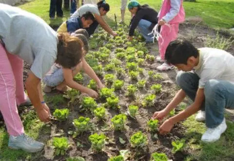
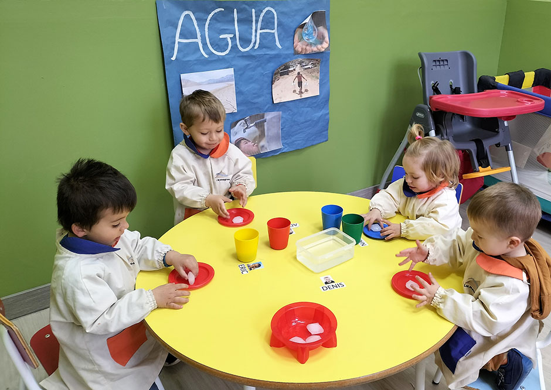
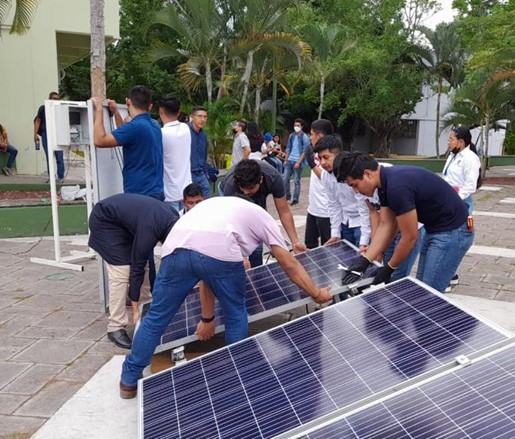

PROGRAMAS
Educamos con raíces, actuamos con conciencia
PRONTO

Educación
Aula Verde
Espacios escolares donde trabajamos educación ambiental a través de talleres, huertas y proyectos colaborativos.
EN CURSO
FINALIZADO

Educación
Red de Escuelas Sustentables
Acompañamos a instituciones escolares para que adopten prácticas sustentables, como paneles solares o sistemas de reutilización de agua.

Capacitación laboral
Sembrando Futuro
Un programa educativo dirigido a jóvenes, con talleres de oficios verdes, emprendedurismo y tecnología sostenible.